An emotional personal safety companion designed to provide reassurance and active protection through character transformations and smart sensing.
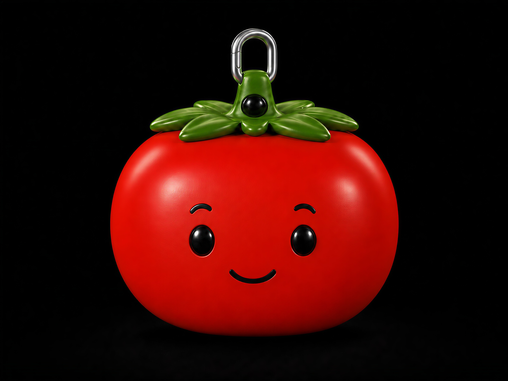
Tomato Guardian is a smart personal safety accessory designed for individuals who frequently travel alone, particularly at night or in unfamiliar environments. It integrates emergency assistance, location sharing, and threat detection into a compact wearable form, exploring how personal safety technology can be embedded into everyday life in a way that feels both practical and reassuring.
During the concept development stage, we explored three different appearance directions before selecting the tomato as the final design. Unlike traditional safety devices that often look tactical or intimidating, a tomato creates a friendly and approachable image, allowing the product to blend naturally into everyday life as a bag accessory.
The tomato was also chosen for its strong visual symbolism. Its red color naturally evokes warning and alertness, while the leaves provide an opportunity for physical transformation. When danger is detected, the leaves lift upward in a "怒髮衝冠" gesture and the facial expression changes from friendly to angry, visually communicating the transition from a companion to a guardian.
By combining a playful appearance with expressive transformation, Tomato Guardian delivers protection in a way that feels approachable, reassuring, and ready to respond when needed.
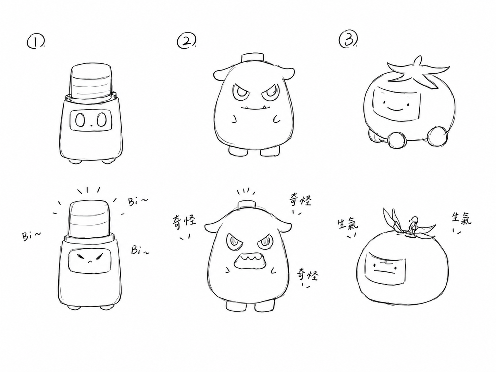
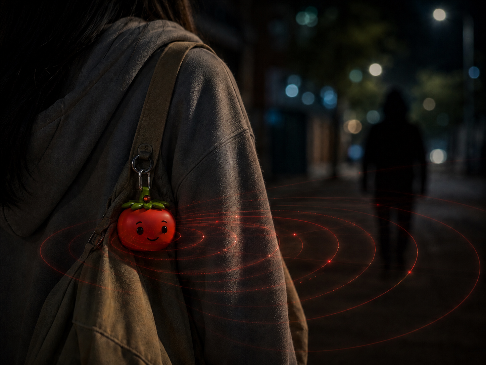
Displays a warm, friendly smile. Serves as a decorative backpack charm while monitoring battery levels and physical connection status.
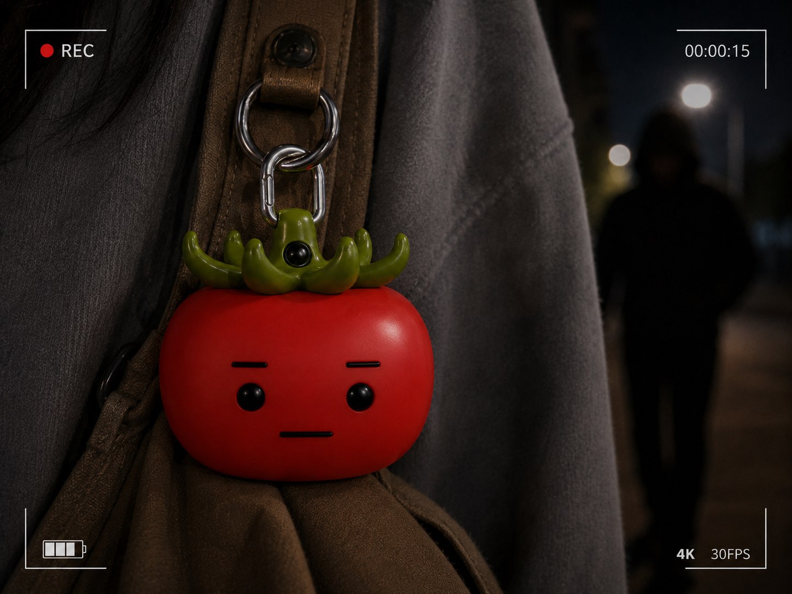
Triggered in dark areas or via app activation. The face shield shifts to reveal angry glowing eyes, and the infrared scanner begins reading motion behind the user.
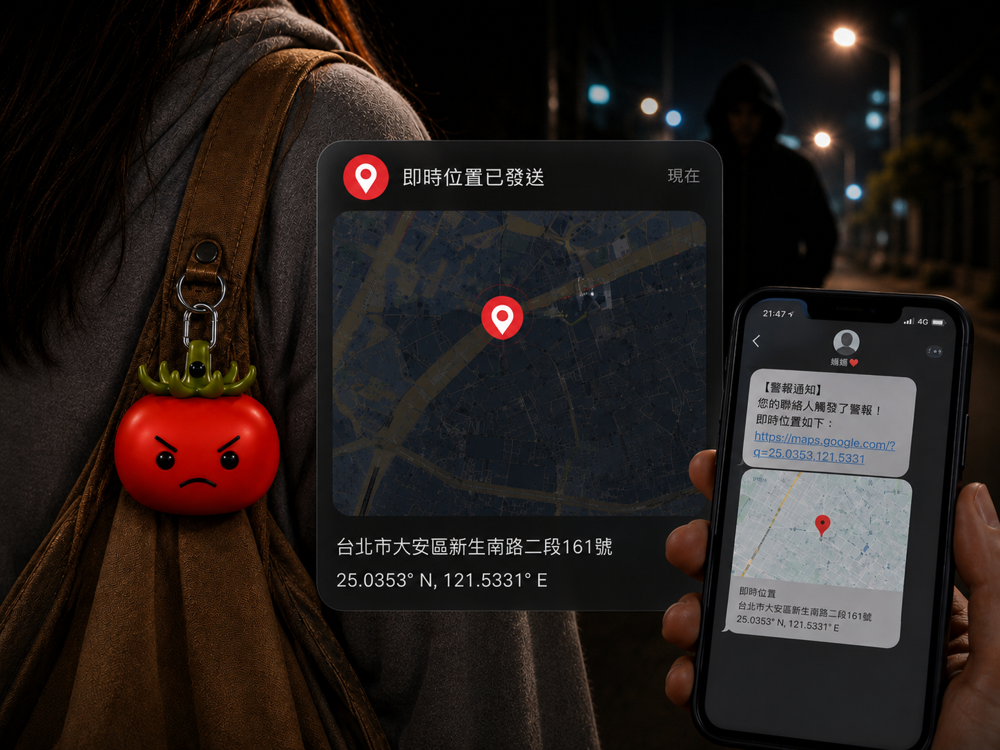
Triggered by squeezing the tomato. Emits high-frequency buzzer sirens, flashes red indicators, and shares real-time GPS locations with designated emergency contacts.
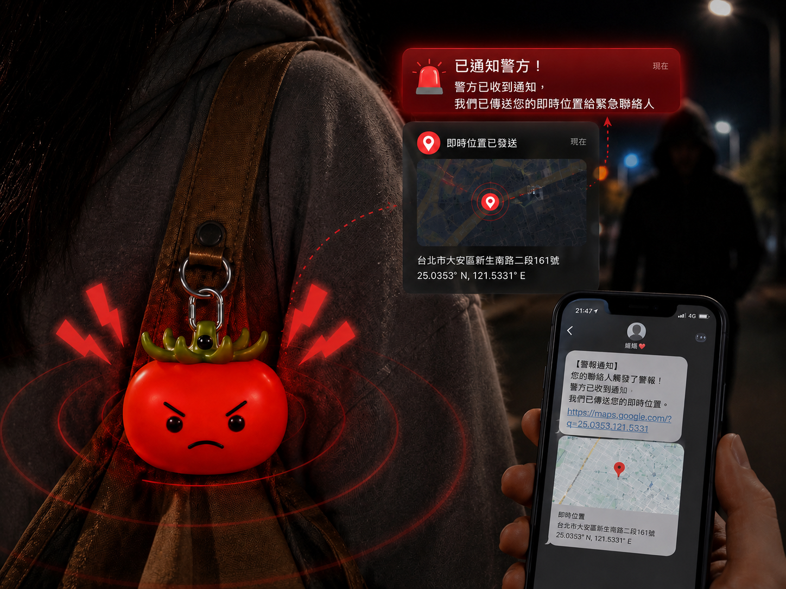
Activated during high-threat situations. The device extends its body form and maximizes all sensors and communication channels for full emergency broadcast.
In the initial design, Tomato Guardian featured a single angry facial expression to emphasize its protective role. While this successfully communicated the product's purpose, it provided little indication of the device's operational status and offered no clear sense of state transition. To strengthen the interaction experience, the second iteration introduced two distinct facial expressions: a friendly expression for Normal Mode and an angry expression for Alert Mode. This visual transformation allows users to instantly recognize the device's current state while reinforcing the narrative of a companion that becomes an active guardian when danger is detected.
The first version used soft silicone for both the tomato body and its leaves. While this created a consistent appearance, the flexibility of the leaves made controlled shape transformation difficult and unreliable. To support the alert mode interaction, the leaves were redesigned using a rigid plastic material. When potential danger is detected, the leaves mechanically lift upward, creating a dramatic visual effect that reinforces the angry facial expression. This change not only improved the reliability of the transformation mechanism but also strengthened the device's ability to communicate its alert status through physical form.
Early testing revealed that immediately triggering an emergency alarm after threat detection could result in false activations and unnecessary stress for users. To address this issue, we introduced an Extension Mode between Alert Mode and the emergency alarm. When suspicious activity is detected, the device first enters Alert Mode, activating its recording and monitoring functions. If the potential threat persists, it then transitions into Extension Mode before triggering the alarm. Even after the alarm is deactivated, the device continues recording and monitoring for a period of time to ensure ongoing threats can still be documented and tracked.
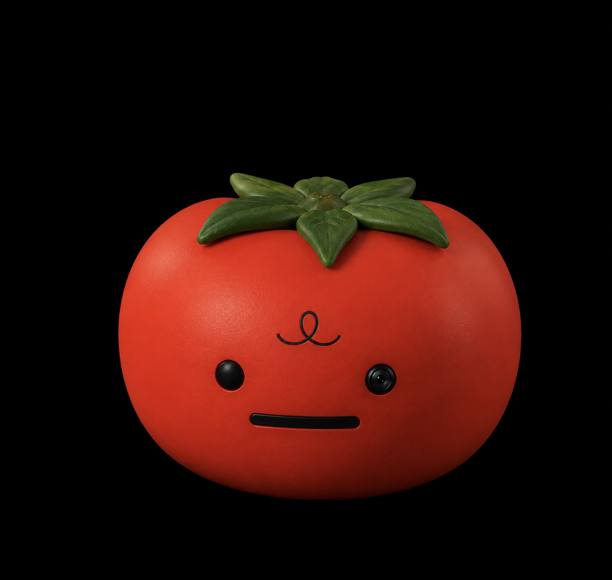
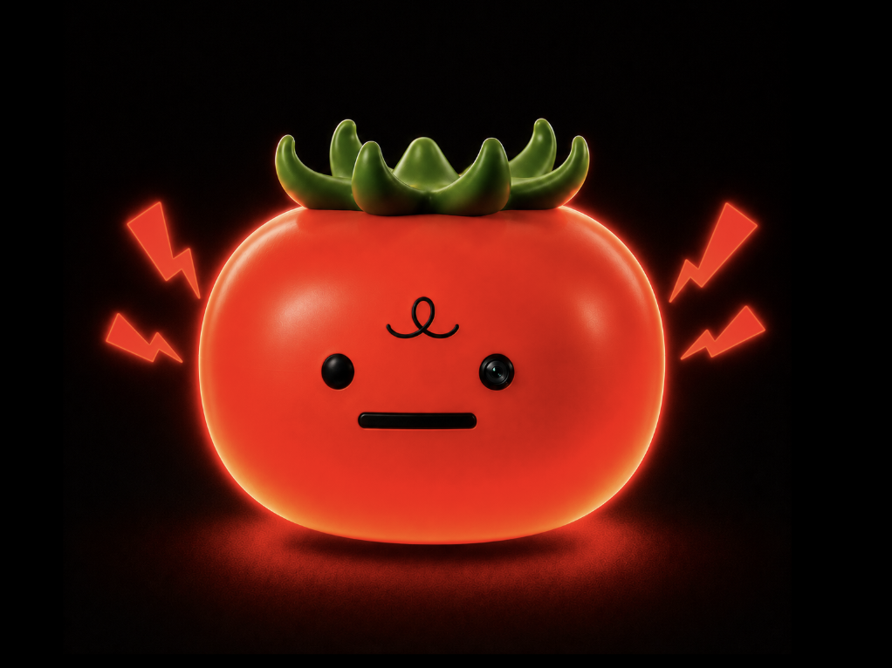
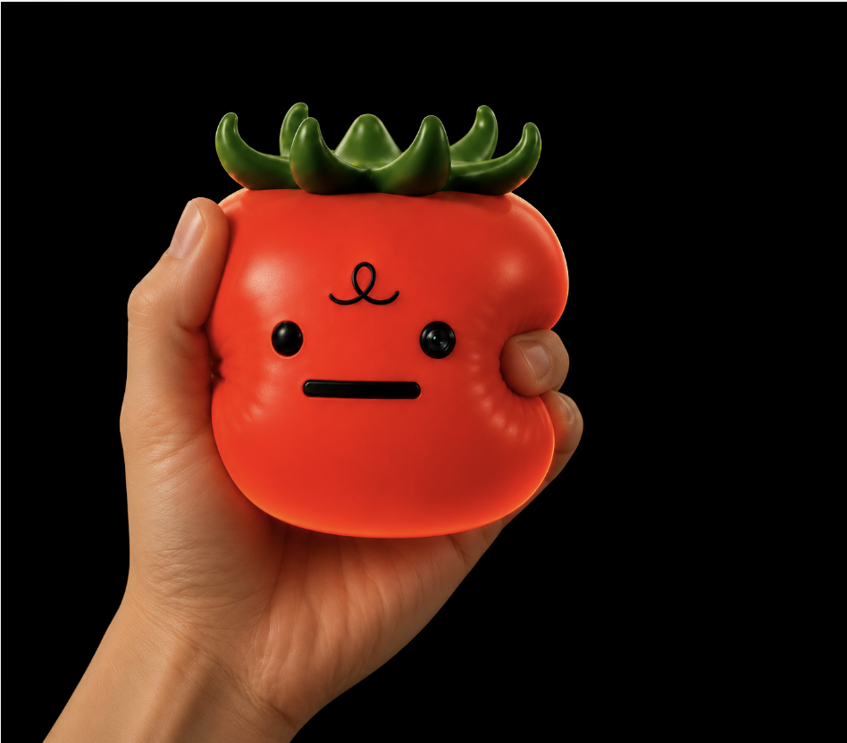
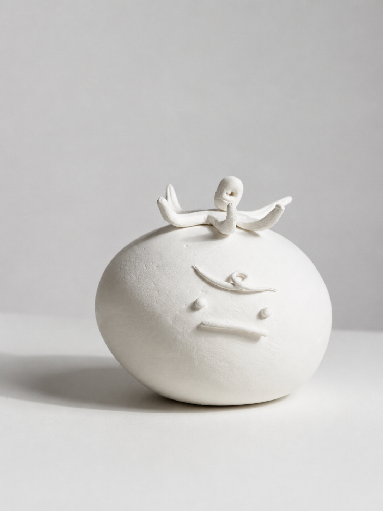
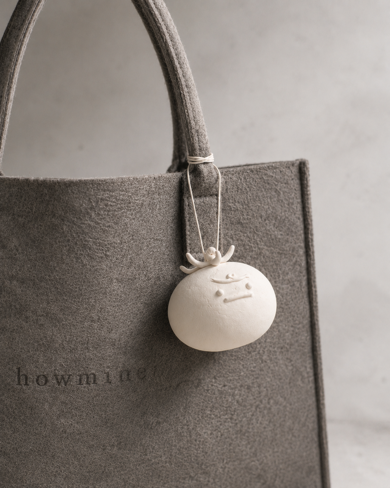
Tomato Guardian challenges the clinical coldness of modern personal safety items. By utilizing character design and emotional companionships, we create safety loops where users feel reassured throughout their journey, not just during emergencies.
A safety device shouldn't look like a warning indicator itself. Embedding emergency behaviors within an approachable character (the tomato mascot) decreases user anxiety and encourages people to keep the device active and accessible.